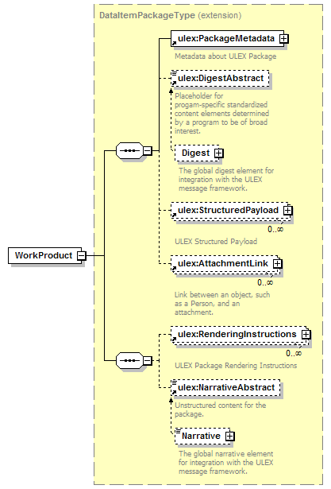
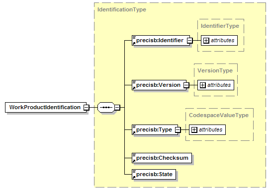
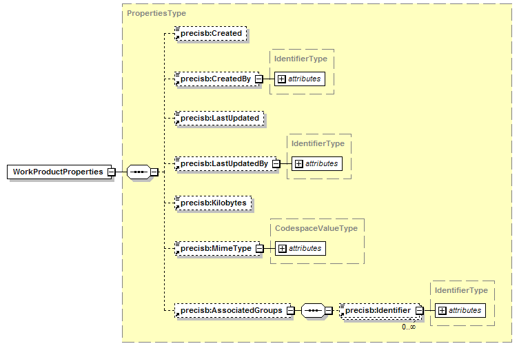
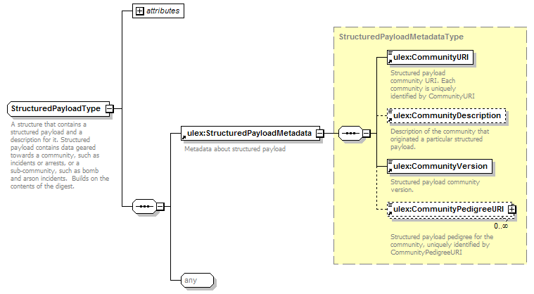
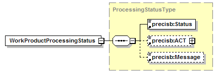

com.saic.uicds.core.infrastructure.endpoint.WorkProductEndpoint
com.saic.uicds.core.infrastructure.endpoint.WorkProductEndpoint
|
||||||||||
| PREV CLASS NEXT CLASS | FRAMES NO FRAMES | |||||||||
| SUMMARY: NESTED | FIELD | CONSTR | METHOD | DETAIL: FIELD | CONSTR | METHOD | |||||||||
java.lang.Object
@Endpoint public class WorkProductEndpoint
The Work Product Service provides operations to manage work products and their relationships to Interest Groups (i.e. incidents). The services provided are:
UICDS work products are defined as a UCore Data Information Package (DIP).

A UICDS work product contains metadata and a structured payload. The metadata elements are UICDS-generated data, are immutable, and are defined as substitutable elements for a UCore PackageMetadataExtension element. The two UICDS metadata elements are:
The Work Product Identification element is the unique identification of a specific version of a work product. It is required for all service requests that target a specific version of a work product and is defined as follows:

The Work Product Properties type contains metadata about the work product such as who created it, when it was created, who last updated it, when it was last updated, it's size, an optional mime type, and the list of Interest Groups (i.e. incidents) that this work product is associated with The Work Product Properties element is defined as follows:

Several of the work product types will have a Digest element. The digest element gives a summary (digest) of the actual work product using UCore who, what, where, when elements. This digest is automatically created by the service that handles the work product. For example the Incident Mangement Service will create and update a digest element for each incident's Incident work product. The UCore specification contains details on the elements that make up a digest. Digests are the main elements that are delivered in a work product notification.
The StructuredPayload contains the actual work product content and is a required element for both create and update requests and is defined as follows:

The StructuredPayload contains:
The CommunityURI should be set to a unique schema that identifies the top element for the contents of the StructuredPayload. The schema version number should be placed in the CommunityVersion element.
The payload content of the StructutredPayload content types can be of three types:
A binary work product should be encoded via base64 bit encoding and should be contained within a BinaryContentType element defined in the "http://www.saic.com/precis/2009/06/payloads/binary" namespace. The mimeType attribute of the BinaryContentType should be set to a standard mime type that represents the binary data. The BinaryContentType is defined in the precis/2009/06/BinaryPayload.xsd file.
A link content work product contains a URL to information and should be contained within a LinkContentType element defined in the "http://www.saic.com/precis/2009/06/payloads/link" namespace. The LinkContentType is defined in the precis/2009/06/BinaryPayload.xsd file.
Any arbitrary XML can also be used as the payload. The CommunityURI and CommunityVerions elements should be set as appropriate.
Note that any work products of Binary, Link, or Any XML types should also create a UCore digest element to summarize the contents of the work product if applicable.
UICDS does not currently use the AttachmentLink, RenderingInstructions, or Narrative elements but clients are free to add data to these elements and UICDS will preserve this data.
A WorkProductProcessingStatus will be returned for publish and update requests. The WorkProductProcessingStatus is defined as follows:

If the Status value is "Accepted" then the operation was accepted by the core. If the Status value is "Pending" then the operation could not be completed in a synchronous manner and the ACT element will contain an asynchronous completion token. A subsequent notification message will contain a WorkProductProcessingStatus element with the identical ACT value and a status of either "Accepted" or "Rejected". If the state of any WorkProductProcessingStatus is "Rejected" then the Message element will contain more details about the reason why the operation was rejected.
The main reason to receive a "Rejected" status is that the requested update was posted against the most current version of the work product. All updates to work products must be based on the most current version of the work product. The WorkProductIdentification for the most current version can be obtained by retrieving the list of work products associated with an interest group using the GetAssociatedWorkProductList. Or clients can use the NotificationService in conjunction with the Resource Profile and Resource Instance service to be notified when a new version of a work product is produced and thereby obtain the latest WorkProductIdenification.
| Field Summary |
|---|
| Fields inherited from interface com.saic.uicds.core.infrastructure.util.ServiceNamespaces |
|---|
NS_AgreementService, NS_AlertService, NS_BroadcastService, NS_DirectoryService, NS_IAPService, NS_Incident, NS_IncidentCommandStructureService, NS_IncidentManagementService, NS_InterestGroupService, NS_LEITSCService, NS_LoggingService, NS_MapService, NS_NotificationService, NS_OasisCAP, NS_ProfileService, NS_ResourceInstanceService, NS_ResourceManagementService, NS_ResourceProfileService, NS_SensorService, NS_TaskingService, NS_WorkProductService |
| Constructor Summary | |
|---|---|
WorkProductEndpoint()
|
|
| Method Summary | |
|---|---|
org.uicds.workProductService.ArchiveProductResponseDocument |
archiveProduct(org.uicds.workProductService.ArchiveProductRequestDocument request)
Archive a work product (i.e. |
org.uicds.workProductService.AssociateWorkProductToInterestGroupResponseDocument |
associateWorkProductToInterestGroup(org.uicds.workProductService.AssociateWorkProductToInterestGroupRequestDocument request)
Associates a work product with an interest group. |
org.uicds.workProductService.CloseProductResponseDocument |
closeProduct(org.uicds.workProductService.CloseProductRequestDocument request)
Close a work product (mark it as inactive and unable to be updated). |
org.uicds.workProductService.GetAssociatedWorkProductListResponseDocument |
getAssociatedWorkProductList(org.uicds.workProductService.GetAssociatedWorkProductListRequestDocument request)
Get the work product list associated with an interest group. |
org.uicds.workProductService.GetProductResponseDocument |
getProduct(org.uicds.workProductService.GetProductRequestDocument request)
Get the work product by work product identification. |
org.uicds.workProductService.GetProductCurrentVersionResponseDocument |
getProductCurrentVersion(org.uicds.workProductService.GetProductCurrentVersionRequestDocument request)
Get the work product by work product id string. |
org.uicds.workProductService.PublishProductResponseDocument |
publishProduct(org.uicds.workProductService.PublishProductRequestDocument request)
Publish the work product (i.e. |
void |
setWorkProductService(com.saic.uicds.core.infrastructure.service.WorkProductService wps)
|
| Methods inherited from class java.lang.Object |
|---|
clone, equals, finalize, getClass, hashCode, notify, notifyAll, toString, wait, wait, wait |
| Constructor Detail |
|---|
public WorkProductEndpoint()
| Method Detail |
|---|
public void setWorkProductService(com.saic.uicds.core.infrastructure.service.WorkProductService wps)
@PayloadRoot(namespace="http://uicds.org/WorkProductService",
localPart="ArchiveProductRequest")
public org.uicds.workProductService.ArchiveProductResponseDocument archiveProduct(org.uicds.workProductService.ArchiveProductRequestDocument request)
throws javax.xml.datatype.DatatypeConfigurationException
ArchiveProductRequestDocument -
javax.xml.datatype.DatatypeConfigurationException
@PayloadRoot(namespace="http://uicds.org/WorkProductService",
localPart="AssociateWorkProductToInterestGroupRequest")
public org.uicds.workProductService.AssociateWorkProductToInterestGroupResponseDocument associateWorkProductToInterestGroup(org.uicds.workProductService.AssociateWorkProductToInterestGroupRequestDocument request)
throws javax.xml.soap.SOAPException
AssociateWorkProductToIncidentRequestDocument -
javax.xml.soap.SOAPException
@PayloadRoot(namespace="http://uicds.org/WorkProductService",
localPart="CloseProductRequest")
public org.uicds.workProductService.CloseProductResponseDocument closeProduct(org.uicds.workProductService.CloseProductRequestDocument request)
throws javax.xml.datatype.DatatypeConfigurationException
CloseProductRequestDocument -
javax.xml.datatype.DatatypeConfigurationException
@PayloadRoot(namespace="http://uicds.org/WorkProductService",
localPart="GetAssociatedWorkProductListRequest")
public org.uicds.workProductService.GetAssociatedWorkProductListResponseDocument getAssociatedWorkProductList(org.uicds.workProductService.GetAssociatedWorkProductListRequestDocument request)
throws javax.xml.datatype.DatatypeConfigurationException
GetAssociatedWorkProductListRequestDocument -
javax.xml.datatype.DatatypeConfigurationException
@PayloadRoot(namespace="http://uicds.org/WorkProductService",
localPart="GetProductRequest")
public org.uicds.workProductService.GetProductResponseDocument getProduct(org.uicds.workProductService.GetProductRequestDocument request)
throws javax.xml.soap.SOAPException
GetProductRequestDocument -
javax.xml.soap.SOAPException
@PayloadRoot(namespace="http://uicds.org/WorkProductService",
localPart="GetProductCurrentVersionRequest")
public org.uicds.workProductService.GetProductCurrentVersionResponseDocument getProductCurrentVersion(org.uicds.workProductService.GetProductCurrentVersionRequestDocument request)
throws javax.xml.soap.SOAPException
GetProductCurrentVersionRequestDocument -
javax.xml.soap.SOAPException
@PayloadRoot(namespace="http://uicds.org/WorkProductService",
localPart="PublishProductRequest")
public org.uicds.workProductService.PublishProductResponseDocument publishProduct(org.uicds.workProductService.PublishProductRequestDocument request)
throws javax.xml.datatype.DatatypeConfigurationException
PublishProductRequestDocument -
javax.xml.datatype.DatatypeConfigurationException
|
||||||||||
| PREV CLASS NEXT CLASS | FRAMES NO FRAMES | |||||||||
| SUMMARY: NESTED | FIELD | CONSTR | METHOD | DETAIL: FIELD | CONSTR | METHOD | |||||||||